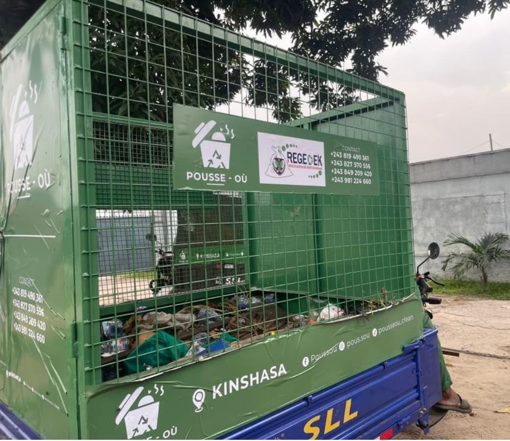

Collecte & nettoyage
Des équipes et des véhicules sur le terrain
Pousse-Où intervient à Kinshasa pour la collecte des déchets et le nettoyage des espaces. Ses équipes et ses véhicules de collecte sont mobilisés au plus près des lieux d’intervention.
- Collecte et enlèvement des déchets regroupés sur votre site
- Nettoyage des cours, passages et espaces extérieurs
- Tri des déchets collectés
- Intervention adaptée au volume, aux accès et au périmètre du site